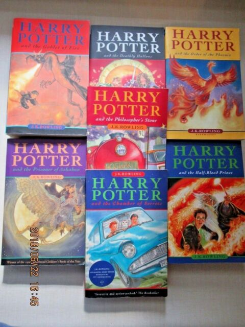

DJ Zevenbergen
coding and music
About Me

Why I decided to code
I've always had an interest in technology. In 2017, I graduated from UW Foster School of Business with BA in Business Administration with a double focus in Information Systems and Operations & Supply Chain Management.
After graduating, I taught English in Spain for two years. Upon returning, I had a bit of a
difficult time deciding what to pursue next,
but I knew that it would be in the world of tech. After doing some research, and getting a
recommendation, I found myself applying to Epicodus.
The rest is future.
My interests
- Music
- Technology
- Reading
- Learning languages (both coding and spoken)
- Making meaningful connections
Projects
Wikipedia Recreation
An attempt to recreate the homepage of Wikipedia using HTML, CSS, and Bootstrap.
Animal Shelter

This website displays all of the animals available for adoption at an animal shelter using HTML, CSS, and Bootstrap.
My Music
Pesticide
A song about love and spreading it around.
Blue Salty Spray
Wistful rememberings of things not yet experienced.
Record U
A song about TLC.
Favorite Books
- It
- Harry Potter Series
- Hitchhiker's Guide to the Galaxy
Favorite Coding Languages
 Python
Python SQL
SQL Javascript
Javascript